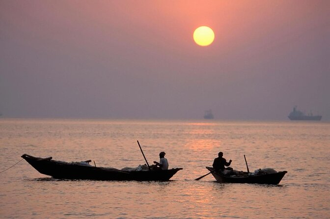

পতেঙ্গা বাংলাদেশের চট্টগ্রাম শহরের সমুদ্র সৈকত যা কর্ণফুলী নদীর মোহনায় অবস্থিত বন্দর নগরী চট্টগ্রাম থেকে প্রায় ১৪ কিলোমিটার দক্ষিণে অবস্থিত। পতেঙ্গা চট্টগ্রাম শহরের একটি জনপ্রিয় পর্যটন কেন্দ্র। ১৯৯১ সালের ঘূর্ণিঝড়ে এই সৈকতটি ভয়াবহ ভাবে ক্ষতিগ্রস্ত হয়। বর্তমানে সমুদ্র সৈকতে সিমেন্ট দিয়ে তৈরি করা বেড়ি বাঁধ দেয়া হয়েছে। শাহ আমানত আন্তর্জাতিক বিমানবন্দর এবং বাংলাদেশ নৌ বাহিনীর ঘাঁটি বিএনএস ঈসা খান পতেঙ্গার সন্নিকটে অবস্থিত। এছাড়া চট্টগ্রাম বন্দরের অনেক জেটি এইখানে অবস্থিত। এছাড়া জনপ্রিয় পতেঙ্গা সমুদ্র সৈকত ও বাংলাদেশ নেভাল একাডেমি এইখানে অবস্থিত।
বর্ণনা
পতেঙ্গা সৈকতের প্রস্থ খুব বেশি নয় এবং এখানে সমুদ্রে সাঁতার কাটা ঝুঁকিপূর্ণ। সমুদ্র সৈকতজুড়ে ভাঙ্গন ঠেকাতে কংক্রিটের দেয়াল এবং বড় পাথরের খণ্ড রাখা হয়েছে। নব্বইয়ের দশকে সৈকতের আশেপাশে বেশকিছু রেস্টুরেন্ট এবং খাবারের দোকান স্থাপিত হয়েছে। সৈকতে বাতির ব্যবস্থা করায় রাতের বেলা ভ্রমনকারী পর্যটকদের নিরাপত্তা নিশ্চিত হয়েছে।